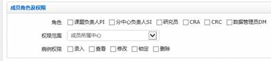
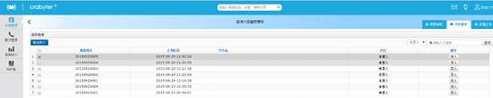
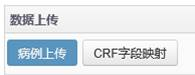

科研管理
科研管理模块涵盖了临床课题的设置、入组病例数据的录入维护工作、数据核查工作等。（课题eCRF表的设置，涉及数据结构化的过程，您只需将电子版发送我们的市场支持人员，由我们来设置）
・ 设置课题基本信息
课题类型可选择“前瞻性课题”或“观察行研究”。课题图标可以下拉，有常见系统器官图标供选择。其余课题信息根据实际情况填写。
可选择单中心或多中心。试验分期，录入方式等。分组可选择“单臂实验”或“分组实验”，如选择分组，需要设置分组信息。
可设置导出数据时需要验证手机验证码，输入希望接受验证短信的手机号码。
课题附件处可上传和下载课题相关文件，便于课题的文件管理。
课题的基本信息设置完成后即显示课题的图标。图标中的含义为：设置中 课题设置 前瞻性课题 进行中 观察性研究查询统计 多中心。课题名称上方的横杠为进度条，显示课题入组病例进度。
・ 查看CRF表。课题eCRF表的设置，涉及数据结构化的过程，您只需将电子版发送我们的市场支持人员，由我们来设置。你可以在此页面查看eCRF表是否符合课题的要求。
・ 成员设置
点击“课题设置”图标，即可进入如前新增课题的课题设置界面，在其中可以更改课题设置。在右上角有如下三个标签，“基本信息”界面与新增课题一致，“查看CRF”可查看CRF的表结构，“课题成员”标签可用来设置课题成员
点击“课题成员”后，左侧显示课题的所有中心，如有分中心也会一并显示。
右侧为各个中心的课题成员列表，可以进行新增、删除和修改。修改只需双击账号名称即可。
点击“新增”后出现科室下的所有用户列表，双击想要添加的用户名称。

随后设置该用户的权限，选择不同角色后会带出不同的病例权限，随后点击保存。添加进入课题成员的用户才能在“科研管理”模块中看到该课题。
课题设置好以后，需要发布，课题成员方能正式使用。在查看无误后您可以通知我们进行课题发布。课题的图标将由“沙漏图标（设置中）”变为“运行图标（进行中）”
课题病例数据录入方式：
入组病例的数据录入，根据数据源的不同，录入方法包括以下不同的方式：
1）完全人工录入
2）出院病例清单excel导入，在此基础上人工录入CRF信息
3）手机APP拍照后在PC端录入。
以下逐一进行说明：・ 先需在手机APP端登入，在科研管理模块中选择所需要上传图片的课题模板，双击进入，选择拍照上传，点击确认即可上传到PC端。APP端自动生成患者编号，上传的图片可根据临床病例或CRF进行归类

・ 用手机APP端用户名和密码登入PC端，在科研管理中选择上传图片的模板，双击进入，点击待录清单即可看到在PC端上传病例的患者编号，点击“录入”按钮进入以下界面
在APP端上传的图片在患者数据源中就能显示出来
清单导入与上传
点击所属课题的图标进入录入界面，在右上角有数据上传页签，点击该页签就可以进行上传操作。
n 模板导入及映射
首先点击“CRF字段映射”，让系统“认识”将要上传的数据，能够将数据与设好的CRF表字段对应起来。
点击“上传模板”，然后在弹出框中选择好将要上传的文件。
这时文件中的字段名就会进入左侧的“列名”清单，接下来需要为列名做字段映射。点击右侧的“选择字段”。
这时显示系统中CRF表的内容，选择与数据源相对应的字段，点击确定。
依次选择好对应的字段，如没有对应可以留空。然后选择主键，主键为判断记录唯一性的依据，可以设1-2个主键，建议以“姓名”、“出生日期”、“住院号”、“身份证号码”、“住院日期”等为主键。
n 病例上传（清单导入）
映射完成后，点击“病例上传”即可进行上传操作。
点击“上传数据文件”，在弹出的对话框中选择要上传的文件。
系统显示导入病例数。
这时在数据上传界面上显示已成功上传的文件。
这时点击右上角的“待录清单”页签，即可进行已上传记录的录入工作。
待录清单页面，显示了清单导入且尚未进行数据录入的病例清单列表，如果完成了录入，该病例清单会自动消除。
录入病例：点击病例最右侧“录入”按钮，打开录入界面。
左侧为本课题需要录入的CRF表格，右侧为该病例的数据源。数据源可以将病例的电子文档复制粘贴进来（系统可以支持对关键字的模糊匹配，提高录入效率和质量），点击右下方的“添加文本病例”按钮，在打开的新窗体中，将外部的病例信息拷贝粘贴，保存。
左下方为系统根据病例的关键信息进行匹配搜索出来的类似病例，核对是否是已有的入组病例，如是，点击“合并录入”按钮，如都不是，点击上方的“新患者录入”按钮。
系统弹出一个入组病例首页窗体，确认。进入入组病例的录入界面（CRF列表和研究流程图界面）。可以看到该入组病例的各个CRF表录入状态。
在左侧CRF表的树状菜单栏内选择需要录入的CRF表，或者在研究流程图上点击需要录入的CRF表图标，都可以打开该CRF表，
根据右侧病例记载逐项添加录入，录入完成后点击蓝色的“录入完成” 按钮，该CRF状态将变为“录入完成”。如果CRF表未全部录入完毕，可以点击绿色的“临时保存”按钮，以方便下次重新打开录入，CRF表状态将从“未录入”变为“录入中”。
提示i：
如果有数据源（即拷贝入电子病例记录，在录入时，系统会根据你需要录入的字段内容，自动在病例记录中进行模糊匹配和定位，显示为黄色背景高亮显示）
如果没有数据源，全部需要人工录入的话，请参考纸质的医疗记录或HIS记录逐项录入。
・ 向导式录入
双击课题图标即可进入新增病例界面
点击“新增”按钮进入以下界面
点击“新患者录入”系统会弹出入组病例首页信息，输入患者姓名和入组日期，病例编号和拼音代码系统可自动带出，最后点击确认，选择录入所需要的向导录入模板
系统中向导式录入分为八大模块患者 患者基本信息→住院与诊断→检查信息→化疗信息→手术信息→放疗信息→不良事件→疗效评估 点击下一步即可进入下一模块的录入，上一模块为录入完成状态
+
住院与诊断表中输入身高与体重可自动算出体表面积与BMI的值，输入临床分期TNM系统自动算出临床分期，输入出院诊断（包括主要诊断和次要诊断）ICD可根据诊断名称模糊匹配
症状与体征为列表可多次添加，点击“”可删除列表
此图标为下拉录入，点击直接可选择下拉选项

在录入检查信息时，可分别录入九大类的检查信息：
包括影像、病理、内窥镜、生化、肿瘤标志物、分子生物学检测、电生理、生命体征、体格检查；点击“添加”按钮可弹出检查表的具体信息，按需录入，点击支持多张图片的上传，如检查类别为影像学检查、病理学检查等可记录相关的病灶信息
如检查类别为生化检查或带有子项的相关检查，系统可带出相关检查子项目，结果判断可根据输入的检查结果和参考值范围自动判断
不同医院有不同套餐项目和参考值范围， 可在知识库-检查套餐中设定
录入化疗信息中选择化疗方案后，系统带入该方案下预设的组成药物，在药物信息列表中，
录入每一个方案内药物的实际使用剂量和剂量单位。如果有减量、延期，请在标记栏内选择。有多个商品名的请选择某个商品名。
录入相关体表面积、体重参数，系统可直接计算化疗药物理论剂量。
在录入不良事件中点击可弹出以下界面
选择从异常检查添加
•如果检查记录模块中录入了检查信息，此处将自动汇总显示相关异常
检查值；
• 选择某一条检查项目，系统可提示符合某条不良反应，除客观的医学
检查外，添加症状类信息，参考CTCAE4的分类分级后，确认即可。
•选择手动添加可输入症状类不良反应名称，系统辅助提示分类分级参考，确认后添加不良反应记录。
•也可人工录入相关不良事件
如医院同时存有多个版本的不良反应分类标准，则需选择相应的不良反
应分类版本号，如CTCAE-V3、 CTCAE-V4。
在录入疗效评估中点击添加按钮出现以下弹框
•选择从检查病灶中选择，如果检查记录模块中录入了病灶信息，此处可自动汇总，无需再次输入
•最长径总和可根据输入的各病灶大小自动计算出结果
•若输入靶病灶的总数超过5个或每个器官超过两个，系统会根据RECISTv1.1的标准做出相应的提醒，数据仍可以保存。
•点击获取上次评估病灶可将上次病灶信息带出
•靶病灶的评估结果系统自动将本次与上次录入的病灶信息进行评估做出判断